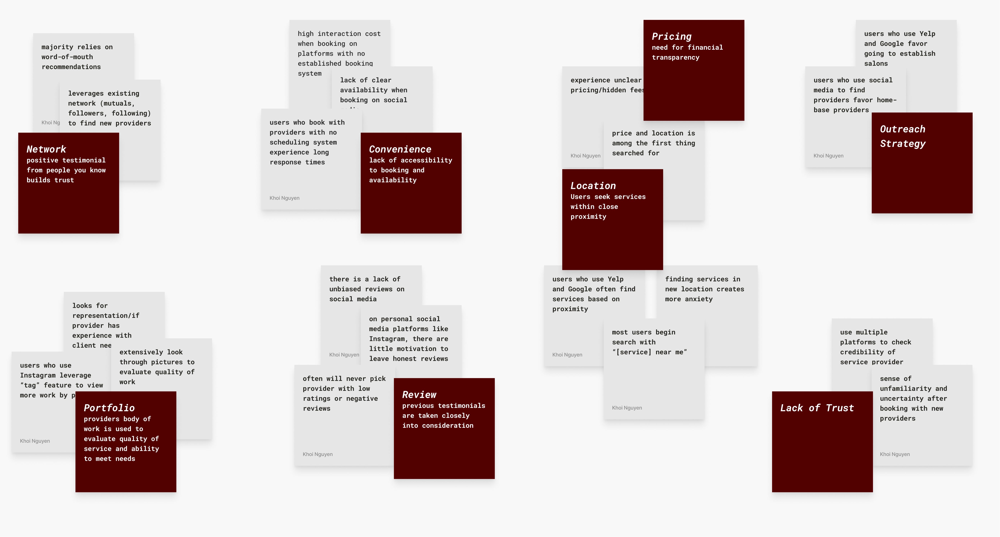
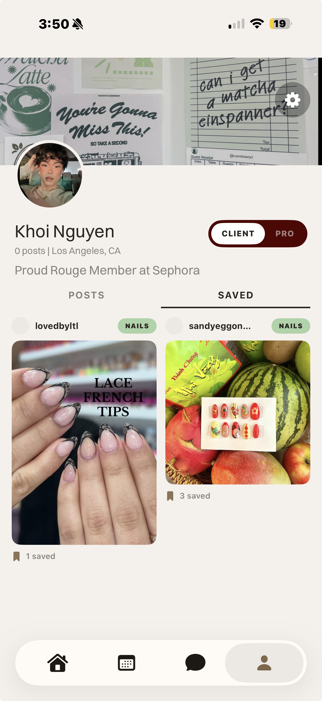
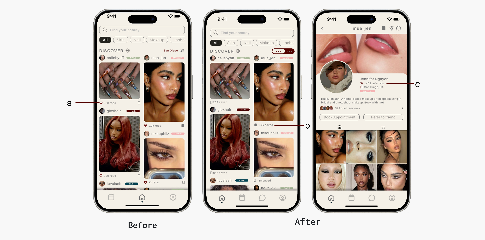
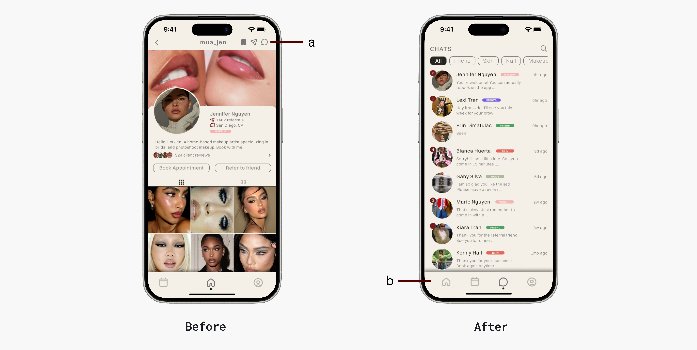
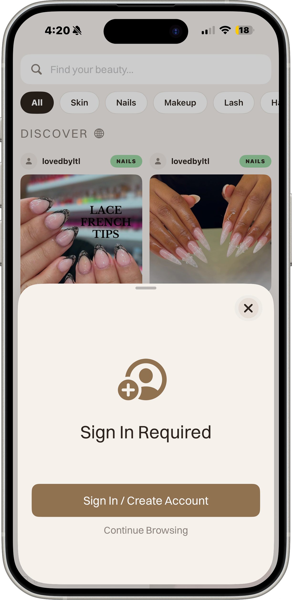
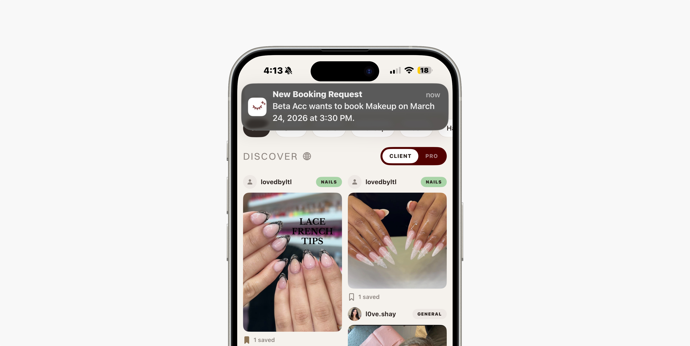

Problem / Challenge
No platform serves both sides. KHOI does.
Independent beauty professionals, especially home-based technicians, are effectively invisible online. They can't get listed on Yelp. They live on Instagram, where there are no unbiased reviews, no booking system, and no way to reach clients outside their existing network. On the other side, clients are running 3 to 4 apps just to validate a single provider, and still booking on gut feeling. No platform serves both. KHOI does.
My Role
Designer, developer, and everything in between.
Lead designer, product strategist, and primary developer across 14 weeks: 10 weeks of research and design, 4 weeks to a shippable product. Developed in SwiftUI with engineering support from Anjo Cajigal.
Process
Research first, then build.
30 interviews with beauty clients and professionals. Affinity mapping surfaced six decision factors that appeared consistently across all participants regardless of platform, background, or service type. Hover each to see what the research found.
Each finding was mapped to an opportunity. I used How Might We statements to reframe user frustrations into design possibilities, then ran a mind mapping session to generate solutions without constraints. That produced a mass of sketches, which I consolidated into three lo-fi prototypes for comparative testing.
Ideation Process
Decision
Factors
Opportunity
Mapping
HMW
Statements
Mind
Mapping
Sketch
Generation
Lo-Fi
Prototypes
Usability
Testing
01
Decision Factors
Six factors surfaced consistently across 30 interviews: portfolio, network, reviews, convenience, pricing, and location. These became the design constraints.

Competitive Analysis
No single platform covered all six factors. Every platform does one thing well. KHOI was designed to do all six. Hover each platform to see where it falls short.
| Feature | Yelp | Acuity | Booksy | TikTok | KHOI | ||
|---|---|---|---|---|---|---|---|
| Portfolio | |||||||
| Network / Referrals | |||||||
| Unbiased Reviews | |||||||
| In-App Booking | |||||||
| Pricing Transparency | |||||||
| Location Discovery | |||||||
| Home-Based Providers | |||||||
| Chat Support |
Key Design Decisions
Every decision had a reason.
1. Dual-Mode Architecture
My early research and testing focused entirely on the client side, and it showed. The designs tested well, but I had left a whole user group underserved: the professionals themselves. The obvious solution was two separate apps, like Uber and its driver app. But beauty professionals are also clients. Forcing them to context-switch between two apps would fracture the very trust and community the product was built on.
Instead, I designed a single verification flow. Professionals tap a verify button on their profile, complete a review process, and once approved, unlock a persistent toggle on both the Discover and Profile pages to switch between Client and Pro mode. This kept the social fabric intact while unlocking a purpose-built professional layer underneath.
Pro Verification Flow / Dual-Mode Architecture
Basic
Info
Services
Policies
Portfolio
Verification
Review &
Submit
Pending
Application Under Review
After submission the user sees an orange clock icon with the message "We'll notify you within 24-48 hours." The system listens for status changes in real time and auto-upgrades when approved.
Approved
Toggle Unlocked
Profile auto-upgrades to a business profile. A persistent CLIENT / PRO toggle appears on both the Discover page and the Profile page.
Rejected
Application Declined
Rejection reason is stored and surfaced to the user. Currently a dead end — users must contact support to reapply.
Client Mode vs Pro Mode

Discover
Browse and save beauty professionals. CLIENT toggle is active.

Profile
Toggle visible on profile. Switch to PRO mode at any time.

Browse & save professionals
Book appointments
Chat with providers
2. Referral Feature Iteration
My first design showed a referral count beneath each post. Users consistently mistook it for a like count, and the metric lost its meaning. I moved the referral count to the provider's main profile page where reputation context is expected, and replaced the post-level count with a saves metric. One repositioning, two problems solved.

3. Chat Discoverability
Chat existed in the first iteration, buried at the top of the provider profile. Five usability participants wanted it, none found it. I moved it into the primary navigation bar. Discoverability isn't just a visual problem, it's a trust problem: if clients can't easily reach a provider before booking, they won't book.

4. Designing for the App Store, Not Just the User
Late in development, Apple's review guidelines required users to access core features without an account. My original flow gated everything behind signup. This forced a fundamental rethink of the onboarding architecture, and taught me that platform constraints are design constraints, not engineering problems.
Before / After
Original Flow
App launch
Signup required to continue
No guest access — App Store rejection
Revised Flow
App launch
Guest access — browse Discover freely
Sign In prompt appears on gated action
"Continue Browsing" option always available

5. The Notification Gap
Beta testing revealed that verified professionals weren't posting. When asked why, they said they didn't know they were approved. I had designed the verification flow but never designed what came after it: the confirmation, the signal, the moment of activation. A notification system wasn't a nice-to-have. It was load-bearing.

Final Designs
The built thing.

Outcomes & Metrics
9 testers. 309 sessions. Shipping next month.
9 beta testers. 309 sessions. 34 sessions per tester on average: people kept coming back. One tester logged 238 sessions, stress-testing core flows across the full app. Tested across 8 iPhone models and multiple iOS versions.
10 weeks of research and design. 4 weeks to a shippable product. Shipping to the App Store next month.
309
Beta sessions recorded
34
Avg sessions per tester
14wk
Research to shippable product
Learnings & Reflection
The hardest problems don't show up in Figma.
Designing solo taught me that the hardest problems aren't visual, they're architectural. The dual-mode decision, the onboarding rethink, the notification gap: none of these showed up in a Figma file. They showed up when real users tried to use a real product. The gap between a prototype that tests well and a product that works is where the most important design thinking happens.
Beyond the craft, this project forced me to think like a founder: balancing user needs, business viability, platform constraints, and engineering reality simultaneously. That tension is where the best product decisions get made.